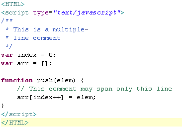

HTML (abreviação para a expressão inglesa HyperText Markup Language, que significa Linguagem de Marcação de Hipertexto) é uma linguagem de marcação utilizada na construção de páginas na Web. Documentos HTML podem ser interpretados por navegadores. A tecnologia é fruto da junção entre os padrões HyTime e SGML. HyTime é um padrão para a representação estruturada de hipermídia e conteúdo baseado em tempo. Um documento é visto como um conjunto de eventos concorrentes dependentes de tempo (como áudio, vídeo, etc.), conectados por hiperligações. O padrão é independente de outros padrões de processamento de texto em geral. SGML é um padrão de formatação de textos. Não foi desenvolvido para hipertexto, mas tornou-se conveniente para transformar documentos em hiper-objetos e para descrever as ligações.
Cascading Style Sheets (CSS) é um simples mecanismo para adicionar estilo (cores, fontes, espaçamento etc) a um documento web. Em vez de colocar a formatação dentro do documento, o CSS cria um link (ligação) para uma página que contém os estilos. Quando quiser alterar a aparência do portal basta portanto modificar apenas um arquivo. Com a variação de atualizações dos navegadores (browsers) como Internet Explorer que ficou sem nova versão de 2001 a 2006, o suporte ao CSS pode variar. O Internet Explorer 6, por exemplo, tem suporte total a CSS1 e praticamente nulo a CSS2. Navegadores mais modernos como Google Chrome e Mozilla Firefox tem suporte maior, inclusive até a CSS3, ainda em desenvolvimento. A interpretação dos navegadores pode ser avaliada com o teste Acid2, que se tornou uma forma base de revelar quão eficiente é o suporte de CSS, fazendo com que a nova versão em desenvolvimento do Firefox seja totalmente compatível a ele assim como o Opera já é. O Doctype informado ou a ausência dele determina o quirks mode ou o strict mode modificando o modo como o CSS é interpretado e a página desenhada.
JavaScript é uma linguagem de programação interpretada. Foi originalmente implementada como parte dos navegadores web para que scripts pudessem ser executados do lado do cliente e interagissem com o usuário sem a necessidade deste script passar pelo servidor, controlando o navegador, realizando comunicação assíncrona e alterando o conteúdo do documento exibido. É atualmente a principal linguagem para programação client-side em navegadores web. Começa também a ser bastante utilizada do lado do servidor através de ambientes como o node.js. Foi concebida para ser uma linguagem script com orientação a objetos baseada em protótipos, tipagem fraca e dinâmica e funções de primeira classe. Possui suporte à programação funcional e apresenta recursos como fechamentos e funções de alta ordem comumente indisponíveis em linguagens populares como Java e C++. É a linguagem de programação mais utilizada do mundo.
 JavaScript Wikipedia